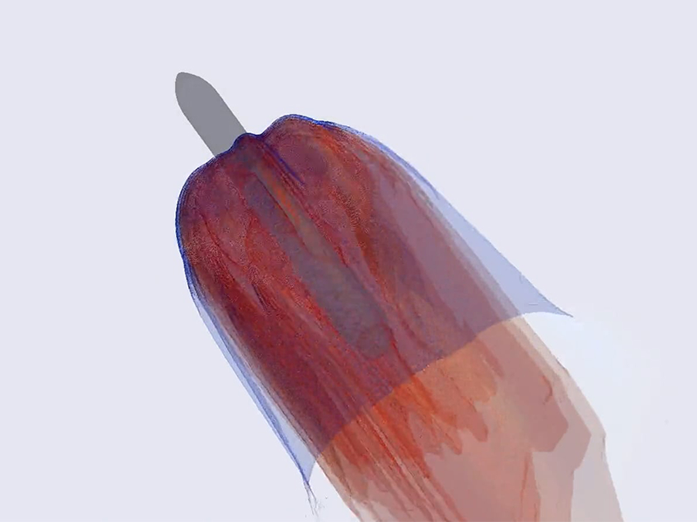

Con Falcon 9 il ritorno del booster ha già cambiato il rapporto fra razzo e infrastrutture. Starship porta quel rapporto più avanti: una torre non deve soltanto consentire di preparare il lancio, ma partecipare al recupero. Un guasto a terra può quindi cambiare la conclusione di un volo che, fino a quel momento, ha funzionato.
La cattura trasferisce un compito
Eliminare un apparato di atterraggio dal veicolo può ridurre massa e complessità a bordo, ma non elimina la funzione. La trasferisce in parte alla torre. I bracci devono muoversi, ricevere il booster entro margini precisi e sopportare il contatto previsto. Sensori, comunicazioni e criteri di autorizzazione diventano componenti della manovra.
La decisione di tornare alla torre
I gas non possono essere ignorati
La rampa deve convivere con scarichi molto energetici. Proteggere il piano di lancio, gestire calore e carichi, evitare detriti e mantenere utilizzabili gli impianti vicini non è un lavoro secondario. Il primo volo integrato mostrò quanto la disponibilità del veicolo e quella della rampa fossero collegate.
Separarsi mentre il motore superiore si accende
L’hot staging anticipa l’accensione dello stadio superiore rispetto al completamento della separazione. I gas trovano un ambiente vicino al booster e alla struttura intermedia. Occorre governare pressioni, flussi e carichi senza danneggiare ciò che deve ancora tornare. La scelta richiede quindi una geometria adatta e una sequenza accurata, non soltanto una riga diversa nel software.

Il lavoro NASA su questi flussi mostra perché il problema richieda simulazioni e confronto con i dati di volo. I colori di una visualizzazione non vanno letti come una misura intuitiva di affidabilità. Rappresentano grandezze di un modello, da interpretare attraverso ipotesi e condizioni del calcolo.
La Florida non è già un secondo Texas operativo
Alla data di questa edizione, LC-39A e SLC-37 appartengono al percorso di costruzione delle infrastrutture Starship in Florida. SLC-37 prevede due piattaforme. Non si attribuiscono automaticamente alle nuove strutture i nomi delle vecchie piattaforme Delta, né si confonde il servizio Falcon già esistente a LC-39A con l’operatività Starship.
Le opere possono avanzare mentre continuano procedure ambientali e valutazioni delle operazioni. Un obiettivo di completamento non è una data di lancio autorizzata. Un limite di attività studiato non è un calendario di missioni già prenotate. Questa distinzione è essenziale anche quando le immagini dei cantieri rendono il progetto molto concreto.
La capacità viene dall’insieme
Due piattaforme aiutano se la produzione, gli impianti di propellente e il coordinamento dei voli possono sostenerle. Possono fornire ridondanza durante manutenzioni e modifiche, ma richiedono risorse e personale. Se ogni volo danneggia infrastrutture importanti, il numero di torri da solo non produce una cadenza elevata.
Il punto rivoluzionario non è quindi la torre più alta. È la possibilità di preparare, lanciare e recuperare senza dover ricostruire ogni volta una parte del sistema. La rampa, in questa prospettiva, è un componente del trasporto spaziale tanto quanto il motore.
Fonti pubbliche e tracce
- NASA Advanced Supercomputing, Starship Hot Staging. Ricerca CFD NASA: interazione fra getti e stadi.
- FAA, chiusura dell’indagine sul primo volo. Settembre 2023: 63 azioni correttive, con modifica di licenza distinta dalla chiusura dell’indagine.
- SpaceX, resoconto Flight 5. Resoconto del costruttore; obiettivi di prova distinti dal successo commerciale.
- SpaceX, resoconto Flight 6. Resoconto del costruttore; obiettivi di prova distinti dal successo commerciale.
- FAA, Starship a SLC-37; avvio SEIS settembre 2026. Infrastrutture in sviluppo e procedura di licenza distinta dalle opere; non pad già operativo.